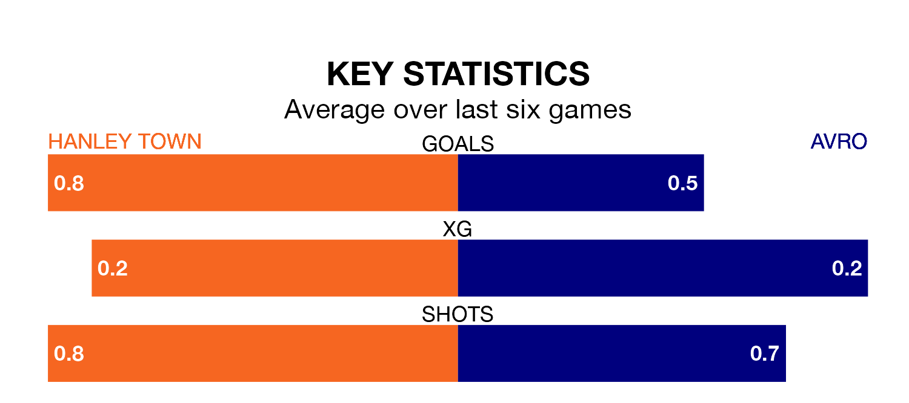

Avro travel looking to secure a first win in seven Northern Premier League Division One – West games against Hanley Town on Saturday.
Avro have lost two and drawn four matches since they last earned three points – against Prescot Cables on December 16.
They face a Hanley side who have won one and drawn four over that time.
Hanley are 16th in the table after 22 games, of which they have won seven and drawn six, earning 27 points.
Avro are 10 places ahead of Town in sixth, with eight wins and 11 draws putting them on 35 points.
With 20 goals in 22 games so far this season, the home team are the league's second-lowest scorers with 0.9 goals per game. But they are conceding fewer than average too, letting in 27 goals at a rate of 1.2 per game.
The visitors are also below average scorers, with 1.1 goals per game, compared to a league average of 1.4. They have conceded 1.0 goal per game.
Hanley's last match was on January 6, a 1-1 draw against Trafford.
Avro lost 3-0 against Newcastle Town last time out, on January 20.
Updated: 09:18 (UTC), 23/01/24